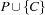
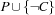
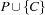
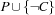

2.6 Distribution and Search Trees
To solve a finite domain problem  , we can always choose a constraint
, we can always choose a constraint  and solve both  and . We say that we have distributed with .
and solve both  and . We say that we have distributed with .
We can apply the idea to spaces. Suppose  is a stable space that is neither failed nor solved. Then we can choose a constraint and distribute with . Distribution yields two spaces, one obtained by adding a propagator for , and one obtained by adding a propagator for
is a stable space that is neither failed nor solved. Then we can choose a constraint and distribute with . Distribution yields two spaces, one obtained by adding a propagator for , and one obtained by adding a propagator for  .
.
The combination of constraint propagation and distribution yields a complete solution method for finite domain problems. Given a problem, we set up a space whose store contains the basic constraints and whose propagators impose the nonbasic constraints of the problem. Then we run the propagators until the space becomes stable. If the space is failed or solved, we are done. Otherwise, we choose a not yet determined variable  and an integer
and an integer  such that
such that  is consistent with the constraint store and distribute the space with the constraint . Since we can tell both and
is consistent with the constraint store and distribute the space with the constraint . Since we can tell both and  to the constraint store (the store already knows a domain for ), chances are that constraint propagation can restart in both spaces.
to the constraint store (the store already knows a domain for ), chances are that constraint propagation can restart in both spaces.
By proceeding this way we obtain a search tree as shown in Figure 2.1. Each node of the tree corresponds to a space. Each leaf of the tree corresponds to a space that is either solved or failed. The search tree is always finite since there are only finitely many variables all a priori constrained to finite domains.